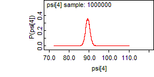
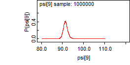
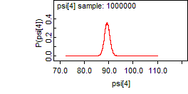
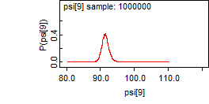

Hald: covariate selection by reversible jump
model {for (i in 1:n) {
Z[i] ~ dnorm(psi[i], tau)
}
psi[1:n] <- co.selection(X[1:n, 1:Q], k, beta.prec)
beta.prec <- tau / lambda
tau ~ dgamma(a, b)
lambda <- 10000
k ~ dbin(0.5, Q) # number of covariates
# use co.selection.model function to get currently selected model
model[1:Q] <- co.selection.model(psi[1:n])
# use co.selection.pred function to calculate the alpha
alpha0 <- co.selection.pred(psi[1:n], zero[1: Q])
for (i in 1:Q){
alpha[i] <- co.selection.pred(psi[1:n], ones[i, 1: Q]) - alpha0
}
pred1 <- alpha0 + inprod(X[1, ], alpha[])
}
Data
list(
n = 13, Q = 4,
a = 0.001, b = 0.001,
Z = c(78.5, 74.3, 104.3, 87.6, 95.9, 109.2, 102.7, 72.5, 93.1, 115.9, 83.8, 113.3, 109.4),
X = structure(
.Data = c(
7,26,6,60,
1,29,15,52,
11,56,8,20,
11,31,8,47,
7,52,6,33,
11,55,9,22,
3,71,17,6,
1,31,22,44,
2,54,18,22,
21,47,4,26,
1,40,23,34,
11,66,9,12,
10,68,8,12),
.Dim = c(13, 4)),
zero = c(0 ,0, 0, 0),
ones = structure(.Data = c(1, 0, 0, 0,
0, 1, 0, 0,
0, 0, 1, 0,
0, 0, 0, 1),
.Dim = c(4, 4))
)
Inits for chain 1
list(k = 1, tau = 0.01)
Inits for chain 2
list(k = 0, tau = 0.01)
Results
variable: model sample size: 1000000 beta.prec = tau / 100
rank probability cumulative structure
1 0.9348 0.9348 {1,2}
2 0.03827 0.9731 {1,2,3}
3 0.01028 0.9834 {1,2,3,4}
4 0.009071 0.9925 {1,2,4}
5 0.007306 0.9998 {1,4}
6 1.0E-4 0.9999 {1,3,4}
7 4.2E-5 0.9999 {3,4}
8 3.9E-5 1.0 {}
9 1.7E-5 1.0 {2}
10 1.2E-5 1.0 {4}
11 8.0E-6 1.0 {2,3}
12 3.0E-6 1.0 {2,3,4}
13 2.0E-6 1.0 {1}
variable: model sample size: 1200000 beta.prec = tau / 1000
rank probability cumulative structure
1 0.8863 0.8863 {1,2}
2 0.09097 0.9773 {1,4}
3 0.01165 0.9889 {1,2,3}
4 0.007816 0.9967 {1,2,4}
5 0.002395 0.9991 {1,3,4}
6 3.617E-4 0.9995 {3,4}
7 2.708E-4 0.9998 {1,2,3,4}
8 6.833E-5 0.9998 {}
9 6.167E-5 0.9999 {2,3,4}
10 5.25E-5 1.0 {2}
11 3.083E-5 1.0 {4}
12 6.667E-6 1.0 {2,3}
13 5.833E-6 1.0 {1}
14 8.333E-7 1.0 {3}
variable: model sample size: 1000000 beta.prec = tau / 10000
rank probability cumulative structure
1 0.8454 0.8454 {1,2}
2 0.1441 0.9895 {1,4}
3 0.00354 0.9931 {1,2,3}
4 0.003347 0.9964 {1,2,4}
5 0.002176 0.9986 {1,3,4}
6 6.77E-4 0.9993 {}
7 4.74E-4 0.9997 {3,4}
8 1.23E-4 0.9999 {2,3,4}
9 4.7E-5 0.9999 {4}
10 4.2E-5 0.9999 {1,2,3,4}
11 4.2E-5 1.0 {2}
12 1.3E-5 1.0 {1}
13 2.0E-6 1.0 {2,3}
14 1.0E-6 1.0 {3}
variable: model sample size: 1000000 beta.prec = 1 / 10000
rank probability cumulative structure
1 0.834 0.834 {1,2}
2 0.149 0.983 {1,4}
3 0.006426 0.9894 {1,2,3}
4 0.005197 0.9946 {1,2,4}
5 0.002778 0.9974 {1,3,4}
6 0.001262 0.9987 {3,4}
7 4.54E-4 0.9991 {}
8 3.43E-4 0.9995 {2}
9 1.52E-4 0.9996 {4}
10 1.26E-4 0.9997 {2,3,4}
11 1.26E-4 0.9999 {1,2,3,4}
12 8.3E-5 1.0 {1}
13 4.2E-5 1.0 {2,3}
14 5.0E-6 1.0 {3}
15 2.0E-6 1.0 {1,3}
16 1.0E-6 1.0 {2,4}
One update took 0.06ms
Choice of updaters
Updater type Size Depth
k reversible jump descrete updater 11 2
[022EB890H]
[022EB8D0H]
[022EB910H]
[022EBE30H]
[022EBE70H]
[022EB780H]
[022EB7B0H]
[022EB7E0H]
[022EB810H]
<tau>
DIC direct parents
![[hald5]](hald5.bmp) 
first process
mean median sd MC_error val2.5pc val97.5pc start sample ESS
alpha[1] 1.459 1.46 0.1211 0.002354 1.229 1.689 10001 50000 2646
alpha[2] 0.5678 0.6551 0.2359 0.00655 0.0 0.7452 10001 50000 1297
alpha[3] -1.351E-4 0.0 0.02956 2.913E-4 0.0 0.0 10001 50000 10297
alpha[4] -0.0891 0.0 0.2173 0.006071 -0.658 0.0 10001 50000 1281
pred1 79.23 79.89 18.25 0.5077 24.39 131.0 10001 50000 1291
second process
mean median sd MC_error val2.5pc val97.5pc start sample ESS
alpha[1] 1.459 1.46 0.1211 0.002354 1.229 1.689 10001 50000 2646
alpha[2] 0.5678 0.6551 0.2359 0.00655 0.0 0.7452 10001 50000 1297
alpha[3] -1.351E-4 0.0 0.02956 2.913E-4 0.0 0.0 10001 50000 10297
alpha[4] -0.0891 0.0 0.2173 0.006071 -0.658 0.0 10001 50000 1281
pred1 79.23 79.89 18.25 0.5077 24.39 131.0 10001 50000 1291
mean median sd MC_error val2.5pc val97.5pc start sample ESS
alpha[1] 1.462 1.462 0.1213 0.001616 1.229 1.697 10001 100000 5636
alpha[2] 0.5654 0.6544 0.2382 0.004663 0.0 0.7464 10001 100000 2609
alpha[3] -2.385E-4 0.0 0.02796 2.007E-4 0.0 0.0 10001 100000 19411
alpha[4] -0.09095 0.0 0.2189 0.004279 -0.6591 0.0 10001 100000 2617
pred1 79.74 79.91 18.75 0.3806 24.74 131.4 10001 100000 2427
Check on externalization of model monitors
first process
variable: model sample size: 500000
rank probability cumulative structure
1 0.8439 0.8439 {1,2}
2 0.1473 0.9911 {1,4}
3 0.0033 0.9944 {1,2,3}
4 0.002656 0.9971 {1,2,4}
5 0.001824 0.9989 {1,3,4}
6 5.4E-4 0.9995 {}
7 3.6E-4 0.9998 {3,4}
8 7.2E-5 0.9999 {4}
9 5.6E-5 1.0 {2,3,4}
10 2.8E-5 1.0 {2}
11 1.6E-5 1.0 {1,2,3,4}
variable: model sample size: 500000
component pobability
1 0.9989
2 0.85
3 0.005556
4 0.1522
second process
variable: model sample size: 500000
rank probability cumulative structure
1 0.8439 0.8439 {1,2}
2 0.1473 0.9911 {1,4}
3 0.0033 0.9944 {1,2,3}
4 0.002656 0.9971 {1,2,4}
5 0.001824 0.9989 {1,3,4}
6 5.4E-4 0.9995 {}
7 3.6E-4 0.9998 {3,4}
8 7.2E-5 0.9999 {4}
9 5.6E-5 1.0 {2,3,4}
10 2.8E-5 1.0 {2}
11 1.6E-5 1.0 {1,2,3,4}
variable: model sample size: 500000
component pobability
1 0.9989
2 0.85
3 0.005556
4 0.1522
variable: model sample size: 1000000
rank probability cumulative structure
1 0.8492 0.8492 {1,2}
2 0.1421 0.9913 {1,4}
3 0.003144 0.9944 {1,2,3}
4 0.002876 0.9973 {1,2,4}
5 0.00164 0.9989 {1,3,4}
6 6.04E-4 0.9996 {3,4}
7 2.7E-4 0.9998 {}
8 1.1E-4 0.9999 {2,3,4}
9 3.6E-5 1.0 {4}
10 1.8E-5 1.0 {1,2,3,4}
11 1.4E-5 1.0 {2}
variable: model sample size: 1000000
component pobability
1 0.999
2 0.8554
3 0.005516
4 0.1473